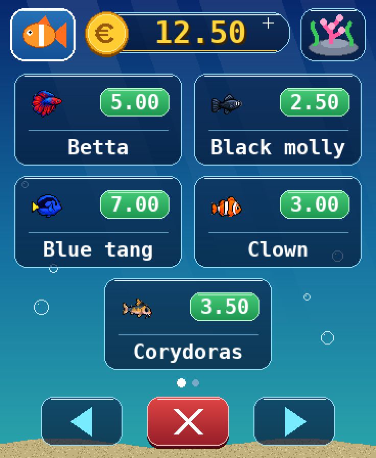
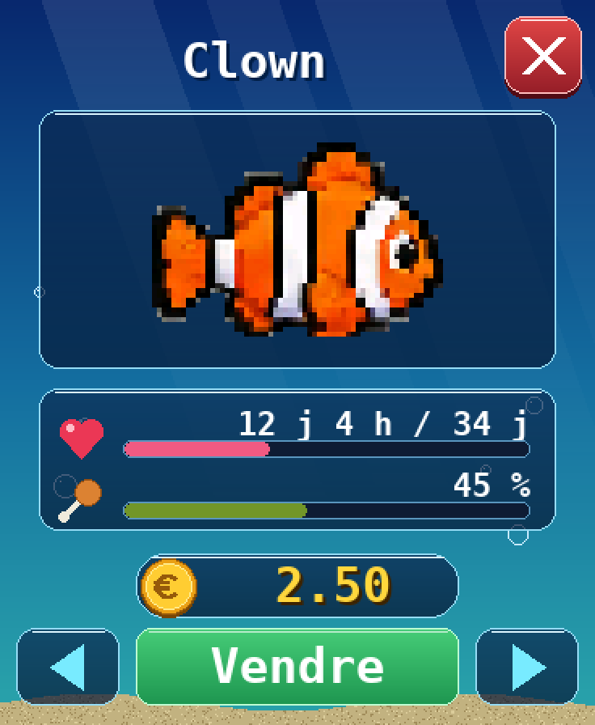
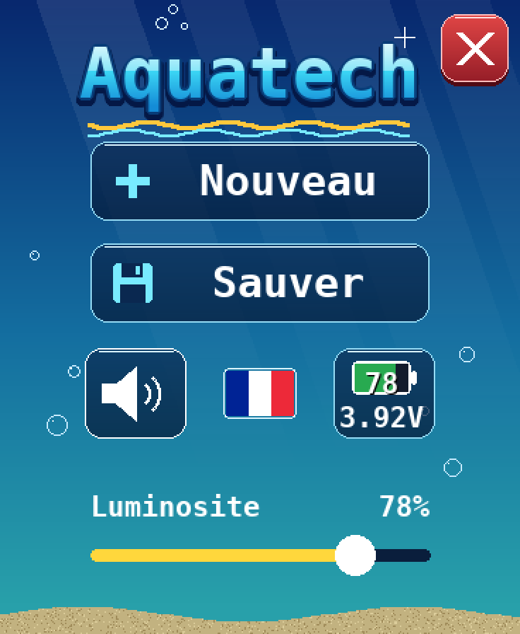

En images
Des sprites en pixel art aux couleurs éclatantes, sur les noirs parfaits de la dalle AMOLED.



Un vrai petit monde à gérer
Un jeu tranquille qui vit à son rythme, au rythme de l'horloge réelle.
10 espèces
Du néon à l'oscar, chaque poisson a son prix, sa vitesse et sa durée de vie. Les jeunes grandissent avec le temps.
Nourrissez-les
Touchez le haut de l'écran pour lâcher de la nourriture. Un poisson oublié trop longtemps finit en squelette…
Algues et éponge
Les algues envahissent les vitres : effacez-les du doigt, ou adoptez un Black molly ou un Blue tang qui les broutent.
Une petite économie
Départ à 10 €, une rente quotidienne, des décors à acheter et des poissons à revendre.
Décorez le bac
Coraux, coffre, plantes, rochers… à placer au fond ou au premier plan.
3 langues
Français, anglais et espagnol, d'une touche sur le drapeau du menu. Son et luminosité réglables.
L'appareil requis
Aquatech est conçu spécifiquement pour la carte Waveshare ESP32-S3-Touch-AMOLED-1.8.
| Modèle | Waveshare ESP32-S3-Touch-AMOLED-1.8 |
|---|---|
| Processeur | ESP32-S3R8, double cœur Xtensa LX7 à 240 MHz, Wi-Fi et Bluetooth LE |
| Mémoire | 16 Mo de flash · 8 Mo de PSRAM |
| Écran | AMOLED 1,8" tactile capacitif, 368 × 448 pixels, 16,7 millions de couleurs |
| Capteurs | Accéléromètre et gyroscope 6 axes, horloge temps réel (RTC) |
| Audio | Microphone et haut-parleur intégrés |
| Alimentation | USB-C · batterie LiPo 3,7 V optionnelle (connecteur MX1.25, charge intégrée) |
| Prix indicatif | Environ 30 € (avec ou sans batterie) |
Il vous faut aussi un câble USB-C qui transmet les données (certains câbles ne font que la charge) et un ordinateur avec Chrome ou Edge.
Mode d'emploi
Toutes les commandes et les règles du jeu sur une page A4, à lire à l'écran ou à imprimer.
Installation en 3 étapes
Comptez environ une minute.
Branchez
Reliez l'écran à votre ordinateur avec un câble USB-C.
Cliquez
Appuyez sur « Installer sur mon écran », puis choisissez le port de la carte dans la liste.
Patientez
Laissez la carte branchée pendant l'installation. Aquatech démarre tout seul à la fin.
Un souci ?
Les solutions aux problèmes les plus courants.
La carte n'apparaît pas dans la liste
Essayez un autre câble : beaucoup de câbles USB-C ne transmettent pas les données. Sinon, débranchez la carte, maintenez le bouton BOOT enfoncé, rebranchez-la, puis relâchez le bouton et réessayez.
Le bouton d'installation n'apparaît pas
L'installation fonctionne uniquement avec Chrome, Edge ou Opera sur ordinateur. Firefox et Safari ne sont pas compatibles.
L'écran reste noir après l'installation
Débranchez puis rebranchez la carte. Si le problème persiste, relancez l'installation en acceptant l'effacement complet de la mémoire.
Comment mettre à jour l'application ?
Revenez simplement sur cette page et cliquez à nouveau sur « Installer » : la dernière version sera installée.
Prêt à plonger ?
Branchez votre écran et lancez l'installation.